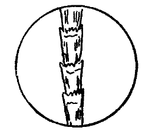

それは寒い寒い一月十七日の朝のことです。四五日前に、近年にない大雪が降ってから、毎日曇り空が続き、今日もまた、ちらちら白いものが降っております。
塚原俊夫君と私とは、朝飯をすましてから、事務室兼実験室で、暖炉を囲んで色々の話をしておりました。と、十時頃、入口の
「塚原俊夫さんはお見えになりますか？」
とお嬢さんは小さい名刺を私に渡しました。
「お願いがあって来ましたとおっしゃってください」
俊夫君は私の渡した名刺を見て、
「さあ、どうぞお入りください」
と言いました。その名刺には「遠藤雪子」と書かれてありました。
やがてお嬢さんは俊夫君と
「ご承知かもしれませんが、私が遠藤信一の娘でございます」
「ああ、遠藤先生のお嬢さんですか、先生は相変わらずご研究でございますか？」
と俊夫君は言いました。
令嬢は急に悲しそうな顔になって、
「実は父が昨晩亡くなったのでございます」
「え？」
と俊夫君はびっくりして飛びあがりました。
「それは本当ですか？」
「はあ、それも誰かに殺されたのでございます」
俊夫君はますます驚きました。遠藤先生というのは東大教授の遠藤工学博士のことで、博士の発見された
しかし、その製法を書いた
俊夫君も同じことを考えたと見えて、
「やっぱり、噂に高い
と尋ねました。
「いいえ、私の兄が犯人として警察へ連れてゆかれたのでございます。しかし兄はけっして父を殺すような人間ではありません。ですから、俊夫さんにこの事件の探偵をしていただきたいと思って参ったのでございます」
「どうか事情を詳しく話してください」
令嬢の話によると、遠藤博士は生来短気な人であったが、五年前に夫人が亡くなられてからはいっそう気が短くなられたのだそうです。令息の信清氏は、今年二十四歳の青年であるが、父博士とは性格がまったく違って文学好きであり、事々に博士と意見が衝突して、この三年間は、健康を害してもいたので須磨の××旅館に養生かたがた滞在して、小説などを書いて暮らし、その間一度も
ところが今から六日前、すなわち一月十一日の晩、博士はある会合から帰ると、流行性感冒にかかって発熱されたそうです。博士は医者にかかることが嫌いで、いつも自分の診断で薬を飲まれたそうです。この四月には停年で大学をやめられることになっていて、近頃はずいぶん気が弱くなっておられたのであるが、病気のために急にさびしくなったためか、十二日になって話しておきたいことがあるから電報で信清を呼び寄せてくれと言われたそうです。
そこで令嬢はその日と十三日と、二度も兄さんへ電報を打ったところが、兄さんからは帰るのが嫌だという返事がきたそうです。すると博士は令嬢に向かって、須磨まで行って連れてこいと言われたので、令嬢は書生の斎藤と婆やとに留守を頼んで、十三日の夜出発し、二日もかかって兄さんを
「ところが昨晩帰りましたら、父はどうしたわけかたいへん怒って、私たちを病室へ入れてくれませんでした。斎藤さんが出てきて、明日の朝先生の機嫌のよい時お会いになった方がよいでしょうと申しましたので、私と兄とは別々の
令嬢はここで言葉を切り、俊夫君の顔を見つめて、さらに言葉を続けました。
「事情を聞いてみると、何でも父は昨夜一時頃に、その時まで看護していた斎藤さんに、兄を起こして連れてきてくれと申したそうでございます。兄が行きますと、父は薄暗い室に蒲団に顔をかくして寝ておりましたそうですが、斎藤さんを寝させてから、二人きりになると、ろくに兄の顔も見ないで、兄に向かって荒い言葉を使ったそうです。
すると兄もそれに対して言い争ったのだそうですが、およそ十分ばかりして、別に話の要領を得ずに再び自分の居間へ帰って寝たそうです。ところが今朝父は
ここまで語って令嬢は
「手拭いのことを、兄さんは何と仰いました」
と俊夫君は尋ねました。
「兄はどこで落としたか覚えがないと申しました」
「斎藤さんはいつからお宅へ来ましたか」
「半年ばかり前からですが、父はたいへん気に入っておりました」
「斎藤さんは今、どこにおりますか」
「証人として、兄といっしょに、警視庁へゆきました」
「先生の死骸は？」
「大学の法医学教室に運ばれました」
「お宅に顕微鏡はありますか」
「父の使っていたのがあります」
「それではまず先生の死骸を見せていただいて、お宅へ伺います」
令嬢が帰るとすぐ、俊夫君は警視庁へ電話をかけて、「Ｐのおじさん」すなわち小田刑事を呼びだしました。遠藤博士の事件は小田刑事の係ではなかったが、小田刑事の取り計らいで、博士の死骸を見せてもらうことになりました。血液検査の道具と例の探偵鞄とを持って、私たち二人が法医学教室へ行くと、小田刑事は先へ来て待っていてくれました。
博士の死骸は午後解剖に付せられるべく、解剖室に
やがて何思ったか、俊夫君はポケットから物差しを出して先生の
髭の検査が終わると、俊夫君は手の指を一本一本熱心に調べましたが、ついに右の人差し指の爪の間から細い細い毛を一二本ピンセットでつまみだして、同じように保存しました。
「これでよろしい」
と俊夫君は満足げな顔をして申しました。
小田刑事は俊夫君の探偵ぶりを見るのが好きですから、私たちといっしょに途中で
博士邸に着くなり、俊夫君は、
「先生の寝室へ案内してください」
と俊夫君は令嬢に申しました。
寝室にはベッドが置かれて、
「湯殿へ案内してください」
と俊夫君はとつぜん申しました。私たちは何のことかと顔を見合わせましたが、令嬢は黙って先へ立ってゆきました。
「風呂をわかすのは婆やさんですか？」
と俊夫君が聞きました。
「いえ、婆やは年寄りですから、風呂は斎藤さんの受け持ちです」
「婆やさんは、そんなに年寄りですか」
「耳も遠く、目もよく見えぬのですが、長年忠実に仕えてきてくれましたから使っております」
と令嬢は答えた。
湯殿は二坪ばかりの広さで、隅の方に三尺四方位の浴槽が備えつけてありましたが、水で濡れておりました。俊夫君は熱心に探した結果、浴槽の外側の、ちょっと人目につきにくい所に、赤黒い小さい斑点をたった一つ見つけましたので、令嬢に頼んで、その部分の木を斑点もろとも削らせてもらいました。
湯殿の検査が終わってから、俊夫君は令嬢に向かって顕微鏡を貸してくださいと頼みましたので、令嬢は遠藤博士の書斎へ私たちを案内して顕微鏡を出してくれました。令嬢が去ると、
「兄さん、まずこの先生の指の爪の間についていた毛を顕微鏡にかけてください」
と俊夫君が申しましたので、私は、さっそく板ガラスにその毛を載せて顕微鏡下に置きました。見ると図に示すごとき

「俊夫君、僕には分からぬ、見てくれ」
と私は申しました。
俊夫君はしばらく見ていましたが、やがてにこりと笑いました。
「分かったかい？」
と私は聞きました。
「分かったとも、
 」
」「え？ 蝙蝠？」
小田刑事と私は思わずいっしょに叫びました。死骸の手に蝙蝠の毛
さて、これは何事を意味するでしょう？俊夫君は、さらに私に向かって遠藤博士の死体から抜き取った髭と、ベッドの上に落ちていた毛とを、顕微鏡にかけてくれと申しました。

私は二本の毛を出して顕微鏡の下で見ますと、死体から抜き取った方は図のＡに示してあるごとく、毛根がついていて、尖端すなわち遊離端は木の枝のように三つ四つに割れておりましたが、ベッドの上にあった方は、長さはほとんど同じですが、図のＢに示してあるごとく、両端とも、
俊夫君は、顕微鏡をのぞいて、満足げに言いました。
「兄さん、ベッドの上にあったのは付け髭の毛だよ」
「え？ 付け髭？」
と私は驚いて尋ねました。
「そうだよ。両端を鋏で切った毛は生きた人間には生えていないよ。……さあ、これから風呂桶についていた血痕を
血痕が人間の血であるか否かを検べるには、血痕の中の赤血球の形を検べても分かりますが、それよりも確かな方法は、血痕を食塩水にとかしてそれと「沈澱素」というものを混ぜ合わせ沈澱が起こるか否かを見るのです。
沈澱素というのは人間の血をたびたび
私はまず、ガラスの皿の上に、暖めた食塩水を少し入れ、その中へ俊夫君が削り取ってきた板の血痕を、細いガラス棒をもってとかし込みました。それから、携えてきた沈澱素を取りだし、その少量を細い試験管に配り入れ、およそ十五分の後、その沈澱素の中へ、血痕をとかした液を加えますと、見る間に白い沈澱があらわれました。
これだけの実験では、まだ人間の血だと断言することができません。というのは、人間に近い動物すなわち猿の血痕でも同じように沈澱を起こすからです。けれど人間の血か猿の血かを区別することは、うちの実験室へ帰ってからでなくては行い難いのです。この場合、風呂場に猿の血があったとは考えにくいですから、私は人間の血だといっても差し支えないと思いました。
俊夫君は、私が以上試験をしている間、書斎の中を隅から隅まで捜しました。机の引き出しをあけて中をかきまわしたり、本棚の書物を取りだしてふるってみたりしました。最後に机の脇の本箱の横側にかけてあった丸善の『日めくり暦』に目をつけ、何思ったかそれを取りあげて熱心に
あまりに、俊夫君の声が大きかったので、私のそばに立っていたＰのおじさん、すなわち小田刑事はびっくりして尋ねました。
「何があったんだ？ 俊夫君」
「遠藤博士の寿命を縮めたものです」
「何だい？」
「
と俊夫君は得意げに言いました。
「遠藤先生を殺した犯人は、先生の発見された秘密を握ろうと思って、この書斎の中を随分さがしたらしいです。けれど、さすがに先生は、金庫の中や、机の引き出しや、書物の中に隠すようなヘマなことはされなかったんです。
先生は丸善のこの『日めくり暦』の十二月の下旬のところへ、四五枚にわたって、毒瓦斯製造法の秘密を書いておかれたんです。暦は毎年十二月の末に送ってくるものですから、先生は、新しい暦が到着したらまた書きかえるつもりだったのでしょう。毎日めくり取られる暦の中に、大秘密が書いてあるなんて、誰だって考えやしません。そこが遠藤先生のえらいところです。だからとうとう犯人は、これをよう見つけなかったんです」
こう言って、俊夫君は『日めくり暦』をポケットの中に入れました。
「この暦はしばらく僕が借りておきます。これで犯人を捕まえるのですから、うっかり
俊夫君は試験管の中の白い沈澱を見て言いました。
「やっぱり、人間の血だね。よし、兄さんちょっとお嬢さんに来てもらってくれ」
雪子嬢が書斎に入るなり、俊夫君は尋ねました。
「大学はいつから始まるはずでしたか？」
「今月の二十一日からです」
「休み中に先生は学校へお行きになりましたか？」
「いいえ、
「昨晩あなたが須磨からお帰りになったとき、先生のそばへお行きになりましたか？」
「いいえ、機嫌の悪い時はかえって怒らせるようなものですから、寝室の入口に立っていました」
「寝室は薄暗かったとおっしゃいましたね？」
「父は明るい所で寝るのが嫌いでした」
「先生の声はいつもと違っていませんでしたか？」
「少しかすれていましたが、病気のせいでしたでしょう」
「先生は毎日顔をお剃りになりましたか？」
「剃るのは嫌いな方でした」
「最近には、いつお剃りでしたでしょうか」
「寝ついた十一日の朝です。その晩、会があったので、いやいやながら剃りました」
「風呂はいつおたてになりましたか？」
「私が兄を呼びに出かけた十三日の夕方です」
「けれどさっき
「あれは毎朝、書生の斎藤さんが冷水浴をするのです」
俊夫君はしばらく考えて、再び尋ねました。
「先生のご親戚はありますか」
「叔父が一人あります。父の弟で、今、朝鮮にいるはずです」
「何をやって見えるですか？」
「何もきまった仕事はやっていないようです。自分で朝鮮浪人だと言っています」
「先生とは違ってよほど変わった人らしいですね？」
「ずいぶん変わり者です。蛇の皮をまいたステッキや、
俊夫君の顔はにわかにうれしそうに輝きました。と、その時、警視庁の白井刑事が一人の青年を連れて入ってきました。令嬢は青年を見て、
「おや、斎藤さん、兄はどうしましたか？」
と尋ねました。
書生の斎藤が答えぬ先に白井刑事は言いました。
「信清さんはまだお帰しできないのです。私はお嬢さんに少しお尋ねがあって来ました」こう言って小田刑事の姿を見て、
「小田君、君は何の用で？」
と言いました。
「俊夫君の案内役さ」
「や、俊夫君、ご苦労様」
と、白井刑事は俊夫君を軽蔑するような口調で言いました。
「お嬢さんの依頼でお邪魔しています。時に解剖の結果どうでしたか」
俊夫君は尋ねました。
「死因は絞殺だそうだ」
「そりゃはじめから分かっていますよ」
と俊夫君は笑って斎藤の方を向いた。
「斎藤さん、先生はゆうべたいへん機嫌が悪かったそうですね？」
「たいへん悪かったですよ」
「一時頃に信清さんを呼びにいったのはあなたですか」
「僕です」
「先生は信清さんと喧嘩されましたか？」
「何だか言い合っていられました。僕は先へ寝ましたからよく知りません」
「
「婆やです」
「婆やはどうしました？」
このとき令嬢が口を出して、婆やは博士の死に驚いて気分が悪くなり、いま奥で休んでいると告げました。
「兄さんちょっと来てくれ、お使いに行ってもらいたいから」
こう言って、俊夫君は意味ありげに眼くばせして、
玄関のところへ来ると、俊夫君は小声になって言いました。
「兄さん、すまないが、これから電話室の後ろの物置部屋に入って隠れていてくれ、僕はこれから書斎へ行って、この暦の話をするんだ。そうすると、きっと誰かが電話をかけにくる。そしたら、何番の誰を呼びだして、どんな話をするか聞いて、この紙に書いてきてくれ、もっとも話は分からぬでもよい」
私は紙と鉛筆を受け取って言われるままに、薄暗い物置部屋の隅にしゃがんで誰が電話をかけにくるかと、耳をすまして待ちかまえました。一分、二分、三分、こういう時の一分は一時間にも相当します。あたりは
十分ほど過ぎると、電話室の
「大手の三二五七番」
と、呼びだしたのは、まさしく書生の斎藤の声です。
「もしもし、通り四丁目の
しばらくすると、斎藤は何やら話しだしましたが、
そこで私は物置部屋を出て、いま聞いたことを紙に書き、書斎に入ってゆきました。と、俊夫君が出てきて、
「兄さん、ご苦労様」
と言いながら、私から紙片を受け取り、一応それを見てさらに何やら書きつけ、小田刑事に渡しました。
「Ｐのおじさん、すみませんが、これからお使いに行ってください。用事はここに書いてあるから」
小田刑事は俊夫君の言うことなら、何でも聞いてくれます。
「それじゃ白井君、ちょっと失礼するよ」
こう言って小田さんは出てゆきました。
小田刑事が出ていった後で、私たち五人――白井刑事、俊夫君、令嬢、書生、私――はしばらくのあいだ黙って、互いに顔を見合わせておりましたが、やがて白井刑事は落ち着かぬ声で俊夫君に尋ねました。
「俊夫君、犯人は分かったか？」
「あら、犯人は信清さんだというじゃないですか？」
と俊夫君は意地悪そうな顔で言いました。
「それが証拠というのは、あの
「それじゃもっと他の証拠を集めたらどうです」
「だから、犯罪の動機を聞きにきたわけさ」
「すると財産のことですか、遠藤先生が亡くなられれば、財産はとうぜん信清さんのものでしょう」
「その財産のほしいような事情が最近に無かったか聞きたいのだ」
「お嬢さんどうですか？」
と俊夫君が申しました。
「兄は
こう答えてから令嬢は、白井刑事の質問に答えつつ、兄さんのおとなしい性質を逐一物語ったので白井刑事もしまいには、
「ふむ、してみると殺害の動機はやっぱり
と言いました。
俊夫君は、白井刑事と令嬢との長い問答にもあまり耳を傾けず、時々懐中時計を出して見ては、何だかそわそわしていましたが、ちょうど、小田刑事が去られてから三十分ほどたったとき、突然、大声で、
「白井さん、早く信清さんを帰らせてください。ねえ、斎藤さん、信清さんに罪は無いでしょう」
と申しました。
「僕は知りません」
と書生は少し面食らって言いましたが、白井刑事も俊夫君の声に驚いて、
「なぜ？」
と聞きました。
「なぜって白井さん、先生の殺されなさったのは
「え？」
と白井刑事は驚きましたが、私たちも意外のことに
「先生が殺されなさってから、少なくとも三日はたっています」
「何？」
と白井刑事。
「ははは、そんなにびっくりしなくてもよろしいですよ。だから、ゆうべ帰った信清さんが殺すはずはないでしょう」
「その証拠は？」
と白井刑事は息をはずませて言いました。すると、俊夫君はますます落ちついて、
「あるどころか、僕は犯人も知っています」
と叫びました。令嬢と書生は一生懸命に俊夫君の顔を見つめました。
「誰？」
と白井刑事。
「皆よく聞いてください。遠藤先生を殺したのは、髭のない、かすれた声の男で、冬は
「まあ、それなら私の叔父です。叔父は朝鮮にいるはずですのに
」と令嬢は叫びました。
この時そばにいた書生の斎藤は、身を翻して逃げだしました。
「それッ」と俊夫君が指をさしだしたので、私は躍りかかって書生を捕まえると、彼は死に物狂いで抵抗しました。
「白井さん、早く斎藤に手錠をかけてください、斎藤は共犯者です」
白井刑事は、どきまぎしながらも、とにかく、俊夫君の言うままに手錠をかけますと、斎藤は死人のように青白い顔をして
と、この時、さっき出ていった小田刑事がはあはあ言いながら入ってきました。
「俊夫君、難なく捕まったよ」
と小田さんは、冬にもかかわらず額の汗を拭き拭き、うれしそうに言いました。
「それは有り難う」
こう言って俊夫君は斎藤のそばに歩み寄りました。
「斎藤君お気の毒だが、犯した罪は引き受けねばならぬよ。さあもう何もかも白状しなさい。
斎藤は眼をつぶったまま黙っていました。
「よろしい」
と俊夫君は申しました。
「君が白状しないならば、僕が代わりに君たちの犯罪の顛末をお話ししよう。すなわち君は遠藤先生の恩を仇で返したんだ。
先生の弟すなわち朝鮮浪人の手先となって、お嬢さんが須磨へ出立された十三日の晩に、二人で、病気中の先生を絞殺し、先生の死体を風呂桶の中へ入れ、腐らぬように雪を取ってきて桶につめ、お嬢さんと信清さんが帰ってこられた昨晩、死体をベッドの下へ運んできておき、ベッドの上には叔父さんが付け髭をして、先生の替え玉になり、怒った真似をしてお嬢さんを近づけぬようにし、それから信清さん一人を呼びだし電灯を暗くし、顔を半分かくし怒鳴りつけて喧嘩し、信清さんが寝てから、死体をベッドの上にあげ、信清さんが落とした
ね、それに違いないだろう。朝鮮浪人はいつの間にか外国の
お嬢さんの留守中、婆やの
それがそもそも運のつきさ。おかげで難なく重大な売国奴を逮捕することができて、大事な秘密は外国の手に渡らずにすみ、大日本帝国万歳だよ。
白井さん、これであなたにもお土産ができたわけです。さあ、早く斎藤を連れていって信清さんを帰らせてください」
白井刑事は先刻から俊夫君のこの意外な説明を、恍惚として聞いていたが、このとき急に我に返って、斎藤を促しながら人々に挨拶をして、急いで出てゆきました。
あとにはＰのおじさん、すなわち小田刑事と令嬢と私たち二人の都合四人が書斎に居残りました。令嬢は悲しさうれしさ取りまぜた涙をそっと
「塚原さん、本当に有り難うございました。父の死んだのは、悲しいですけれど、兄の嫌疑も晴れ、大切な毒瓦斯の秘密もなくならずに済みましたから、私もすっかり安心しました。これというのもみんなあなたのおかげです。
それにしても叔父は何というひどい人間でしょうか。わたし、本当にびっくりしてしまいました。でも、一体どうしておじの
俊夫君は得意げに言いました。
「この事件を解決してくれたのは、先生の
そこで私は物差しを出して髭の長さをはかってみたら一・五ミリメートル内外のものばかりで、二ミリメートルを越したものは一本もありませんでした。髭は一日におよそ〇・五ミリメートルのびるものですから、もし先生が昨晩まで生きておられたのならば、少なくとも二・五ミリメートル以上なくてはなりません。そこで私は先生が殺されなさったのは昨晩ではないと判断しました。
してみると、昨晩先生のベッドにいた人は、先生の替え玉でなくてはならぬと思ってベッドを捜すと、付け髭の毛が一本見つかりました。替え玉だとしてみると、お嬢さんを近づけぬように怒鳴り散らしたわけがよく分かります。信清さんは久しぶりにお父さんの顔を見られたので、ことに薄暗い
さて替え玉だとしてみると、その男こそ先生を殺した犯人だということが分かり、同時にとうぜん斎藤が共犯者でなくてはならぬと思ったのです。すると、殺害の動機は何であろうか。言うまでもなく
次に僕はもし三日前に殺したのだとすると、その間死体をどこへ隠しておいたのだろうかと考えました。するとこの
雪はおそらく死体を冷やすために取ったのだろう。してみると、死体は風呂桶の中に雪詰めにしてあったに違いないと考えて風呂場を詳しく検査すると、果たして血痕がたった一つ見つかりました。その血痕はたぶん先生の鼻から出たものでしょう。まだその他にもあったに達いないですけれど、おそらく斎藤が冷水浴をやる風をして洗いさったのでしょう。
最後に僕は先生の替え玉になる男は何者であろうと考えました。先生の替え玉になる者はきっと先生に似た男に違いないと、ご親戚の有無を尋ねたら、お嬢さんは、叔父さんが一人あって、しかもその人は変人で、蛇の皮や、
そこで僕は先生の爪の間にあった
信清さんはその日に無罪放免となりました。俊夫君の推定のごとく、主犯人は遠藤博士の実弟で、某強国から多額の金を貰って毒瓦斯の秘密を奪うために、書生の斎藤を買収して博士を殺したのだと白状したそうです。殺してすぐに逃げなかったのも、やはり秘密を見つけることができなかったのと、も一つは令息に嫌疑をかけて、無事に身を
かくて俊夫君のおかげで、大切な毒瓦斯の秘密は奪われずにすみました。